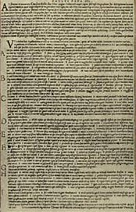

Thursday, October the 7th, 2004
back to: title, date or indexes
We think of Dobson primarily as a pamphleteer, albeit an out-of-print one. His occasional forays into public speaking, lecturing, and, it has to be said, jabbering like a man who has lost his marbles, are thus often overlooked. A new paper by Aloysius Nestingbird*= attempts to set this right. I say “attempts” because in my view Nestingbird has been spectacularly unsuccessful. Reading his verbose twaddle gave me a splitting headache after the first couple of paragraphs, and I went to have a lie down in a darkened room. As I lay on my pallet, I took pleasure in recalling my great enmity for Nestingbird. Verily, I thought to myself, staring at patches of badly-applied paint on the ceiling, he is a detestable old fool who would be better off inspecting the bed of a slimy pond than writing articles about Dobson. The fact that I am even older than Nestingbird is irrelevant.
As soon as various sensory globules in my cranium had stopped pulsating, I returned to my desk and ploughed on through the article. Unlike its author, I am conscientious, and I had promised to review it for this website, for my usual fee of a tin of plum tomatoes and a new cravat with which I can cut a dash.
Nestingbird focuses his attention on Dobson's famous Declaration, which the pamphleteer delivered on a sopping wet Tuesday in March in the year of Nicholas Ray's film Bigger Than Life, in which James Mason memorably goes bonkers on cortisone and announces “God was wrong!” in one of Hollywood's finest moments. I wish I could say that the film and Dobson's Declaration had some definite connection. The trouble is that the only record of what he said that day, standing next to a gleaming puddle in the bailiwick of Thrombosis Magna, is the text Marigold Chew inscribed on the back of a toffee apple wrapper the next day. As you can see in the reproduction below, even magnified as it is, her writing is far too tiny to be read by the average human eye, or mine at any rate.

This is doubly frustrating, as we have to take the wretched Nestingbird's word on trust—pah!—when he asserts that the entire Declaration was nothing more than a garbled account of Dobson dropping his bus pass down a crevasse and obtaining a replacement from a kiosk infested with bats.
Now I am going to go and lie down again, to await my tomatoes and cravat.
*NOTE :How I Spent Four Profitable Hours Listening To A Rant By Dobson, published in The Bulletin Of Dobson Studies, Vol XIV No 9
Hooting Yard on the Air, October the 20th, 2004 : “The Horrible Cave--I” (starts around 24:26)